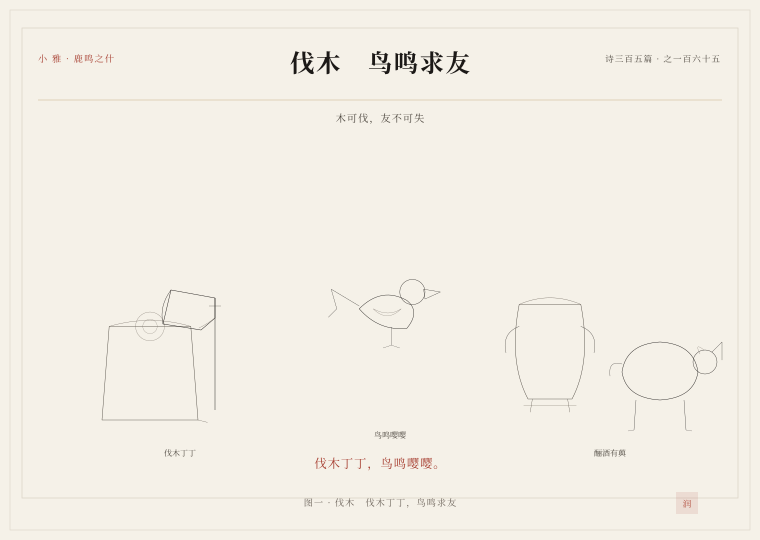
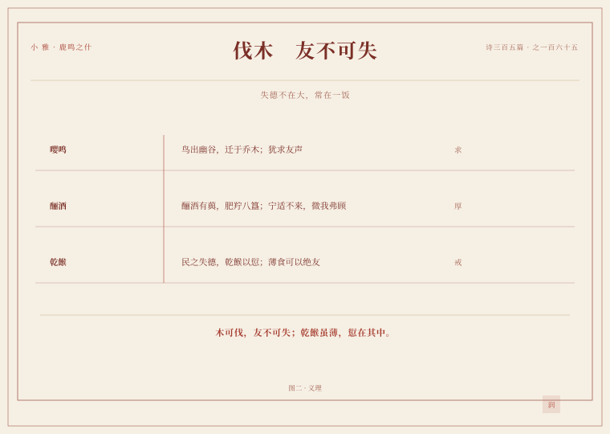

第一百六十五篇 伐木
小雅 · 鹿鸣之什 SJ165
朗读 · 普通话
依经文原文朗读，章次不读出；配古琴底乐，不改速、不加拖腔。全库同一音色（豆包 TTS），非播音员录制。
一 解题
诗三判：
- 谁在说：宴朋友故旧之人。闻伐木丁丁，鸟鸣嘤嘤；鸟出幽谷而迁乔木，犹求友声，何况人乎。
- 说什么事：六章。前三章以「伐木—鸟鸣—求友」起，中二章写酾酒、肥羜、笾豆、诸父诸舅，末章写「民之失德，乾餱以愆」。
- 为何编在此：常棣亲兄弟，伐木亲朋友；兄弟天合，朋友义合。
小雅之始，亲亲而及友。
《毛序》：「《伐木》，燕朋友故旧也。自天子至于庶人，未有不须友以成者。亲亲以睦，友贤不弃，不遗故旧，则民德归厚矣。」
朱子《诗集传》：「兴也。丁丁，伐木声。嘤嘤，鸟声。幽谷，深谷。乔木，高木。矧，况也。神之听之，终和且平，言朋友相好，则神听之而和且平也。」三章：「许许，众人共力之声。酾，泲酒也。藇，美也。羜，未成羊也。速，召也。微，非也。」四章：「於，叹辞。粲，鲜明。埽，扫也。簋，黍稷器。牡，雄也。」五章：「衍，多也。践，行列貌。乾餱，食之薄者。愆，过也。」六章：「湑，漉酒。酤，买酒。蹲蹲，舞貌。迨，及也。」
本库的看法：《伐木》不是一首饮食诗，是一首「求友」诗。
伐木丁丁，是劳者之声；鸟鸣嘤嘤，是求友之声。鸟出幽谷迁乔木，尚求其友；人不如鸟，则德薄。诗中最重「民之失德，乾餱以愆」：失德不在大，常在一顿饭、一块干粮。
须辨：丁丁是伐木声，不是叮嘱；嘤嘤是鸟声，不是哭声；矧是况，不是审；许许是共力声，不是许可；乾餱是薄食，不是干粮专名。断语：木可伐，友不可失；乾餱虽薄，愆在其中。
先辨五事：「丁丁」是伐木声，不是叮嘱；「嘤嘤」是鸟鸣，不是哭声；「矧」是况，不是审；「许许」是众人共力声，不是许可；「乾餱」是薄食，不是泛指干粮。
二 经文
第一章
伐木丁丁，鸟鸣嘤嘤。出自幽谷，迁于乔木。
嘤其鸣矣，求其友声。
第二章
相彼鸟矣，犹求友声。矧伊人矣，不求友生？
神之听之，终和且平。
第三章
伐木许许，酾酒有藇。既有肥羜，以速诸父。
宁适不来，微我弗顾。
第四章
於粲洒埽，陈馈八簋。既有肥牡，以速诸舅。
宁适不来，微我有咎。
第五章
伐木于阪，酾酒有衍。笾豆有践，兄弟无远。
民之失德，乾餱以愆。
第六章
有酒湑我，无酒酤我。坎坎鼓我，蹲蹲舞我。
迨我暇矣，饮此湑矣。
三 韵读
- 一章：丁、嘤、谷、木、声，耕、屋、东交错。声空而远。
- 二章：声、生、听、平，耕、真、庚相叶。声和。
- 三章：许、藇、羜、父、顾，鱼、侯相叶。声欢。
- 四章：埽、簋、牡、舅、咎，幽、之交错。声敬。
- 五章：阪、衍、践、远、愆，元、寒相叶。声沉。
- 六章：湑、酤、鼓、舞、暇、湑，鱼、侯相叶。声舞而收。
读法：一章「伐木—鸟鸣—出谷—迁乔—求友」五顿，声由劳入远；二章「鸟—人—神」三转，声由远入和；三章以下入宴，声欢；五章「乾餱以愆」一转，声沉；六章复欢。一沉一起，是诗之呼吸。
四 字义与名物
- 丁丁：伐木声。嘤嘤：鸟鸣声。幽谷：深谷。乔木：高树。嘤其鸣：鸣而求。友声：同类之声。
- 相：看。矧：况。伊人：此人。友生：朋友。神之听之：神明听察。终和且平：终得和顺平宁。
- 许许：众人共力声。酾：滤酒。藇：美。羜：未成年的羊。速：召。诸父：父辈亲族。宁适：宁可。微：非。顾：顾念。
- 於：叹美辞。粲：鲜明。洒埽：洒扫。陈馈：陈列馈食。八簋：八件食器。肥牡：肥公羊。诸舅：母党亲族。咎：过错。
- 阪：山坡。衍：多。笾豆：礼器。践：行列。兄弟无远：兄弟不要疏远。乾餱：薄干粮。愆：过失。
- 湑：滤酒。酤：买酒。坎坎：鼓声。蹲蹲：舞貌。迨：及。暇：闲暇。
五 今译
一章：伐木丁丁，鸟鸣嘤嘤。鸟从深谷飞出，迁到高树。嘤嘤地鸣，是求同类的声。
二章：看那鸟，尚且求友声。何况是人，不求朋友？神明听察，终得和顺平宁。
三章：伐木许许，滤酒鲜美。既有肥羊，召请诸父。宁可他们不来，不是我不顾念。
四章：洒扫鲜明，陈列八簋。既有肥公羊，召请诸舅。宁可他们不来，不是我有过错。
五章：山坡伐木，滤酒多。笾豆成行，兄弟不要疏远。百姓失德，常因一顿薄食成过。
六章：有酒就滤给我，无酒就去买。坎坎鼓我，蹲蹲舞我。等我闲暇，饮这滤好的酒。
六 章旨
- 一章：伐木鸟鸣，是「劳者有声」；出谷迁乔，是「求友」；鸟且求友，人何以不求。
- 二章：鸟求友，是「物之常」；人求友，是「德之厚」；神听和顺，是「友道通神」。
- 三章：酾酒肥羜，是「燕」；宁适不来，是「主之厚」；厚在不责人来。
- 四章：洒扫八簋，是「敬」；微我有咎，是「自省」；敬在不怨人弃。
- 五章：笾豆有践，是「礼」；乾餱以愆，是「失德之微」；礼之败，常自薄食始。
- 六章：有酒无酒，是「随」；鼓我舞我，是「乐」；迨暇饮湑，是「待」；待暇，是不迫人。
七 诗教
- 朋友之道在先求：鸟求友声，人求友生；不求，则虽有友不应。
- 燕友在厚不在丰：有肥羜、八簋，仍说「宁适不来，微我弗顾」；厚在心上，不在物上。
- 失德在微：乾餱之薄，可以成愆；朋友之绝，常起于一顿饭。
- 不遗故旧：诗序「不遗故旧，则民德归厚」；厚德自不遗始。
八 分寸与边界
- 不把「丁丁」读成叮嘱：丁丁是伐木声；读成叮嘱，则「嘤嘤」不应。
- 不把「嘤嘤」读成哭声：嘤嘤是鸟鸣求友；读成哭，则全诗成悲。
- 不把「许许」读成许可：许许是共力声；读成许，则伐木无声。
- 不把「乾餱」只读成干粮：乾餱是薄食，诗取「薄」义；只作干粮，则「愆」无着。
- 不把「诸父诸舅」读成父舅：诸父是父辈亲族，诸舅是母党；读成一人，则燕礼失序。
九 存疑
- 诗旨：毛序「燕朋友故旧」，朱子从之；一说「刺」诗。本库从燕，而以为燕中有戒。
- 「许许」：毛传「柹貌」；朱子「众人共力之声」。从朱子。
- 「羜」：毛传「未成羊」；朱子同。从未成羊。
- 「乾餱」：毛传「食之薄者」；一说「乾粮」。从薄食。
- 「神之听之」：一说神明，一说「神」为「慎」。从神明听察。
十 跨典
- 《论语》「朋友信之」；此篇求友声、神听之，是信之始终。
- 《礼记》「饮食男女，人之大欲存焉」；此篇以饮食立礼，是不废欲而节之。
- 《孟子》「出入相友，守望相助」；此篇「兄弟无远」，是友道之厚。
十一 双卡与图
六对：
| 丁丁（伐木声） |
丁丁（叮嘱） |
| 嘤嘤（鸟鸣） |
嘤嘤（哭声） |
| 矧（况） |
矧（审） |
| 许许（共力声） |
许许（许可） |
| 乾餱（薄食） |
乾餱（泛指干粮） |
| 诸父诸舅（亲族） |
诸父诸舅（父舅二人） |

图一 · 伐木 伐木丁丁，鸟鸣求友

图二 · 伐木 乾餱以愆，友不可失